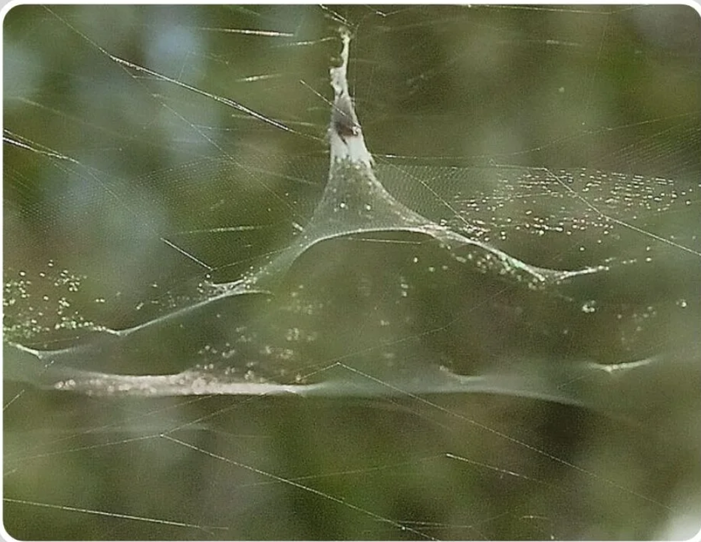

Spiders are known for their ability to spin webs, and there are several different types of webs that various species create. These webs serve different purposes, such as catching prey, providing shelter, or facilitating reproduction.
Orb Webs

Orb-weavers create large, circular webs that are highly symmetrical. These webs are typically built in open areas and are designed to catch flying insects.
Cobwebs

Cobwebs are irregularly shaped webs that are often found in corners and under eaves. They are simpler in structure compared to orb webs and are used primarily for shelter.
Sheet Webs

Sheet webs are flat, horizontal webs that are often built between vegetation or other structures. They are effective for catching small insects that fly into them.
Funnel Webs

Funnel webs are shaped like a funnel and are often built in grass or low vegetation. The spider hides in the narrow end of the funnel and waits for prey to enter.
Triangle Webs

Triangle webs are constructed in a triangular shape and are often found in areas with dense vegetation. They are designed to catch insects that fly into the web structure.
Hackled Band Webs

Hackled band webs are characterized by their distinctive band-like patterns and are often built in sheltered locations. They serve as effective traps for flying insects.
Web design in Zero Gravity

Spiders in zero-gravity environments build webs that differ remarkably from those on Earth. Without gravity, spiders initially create irregular, asymmetrical webs, but they quickly adapt by using light as a guide to determine which way is "up." Fascinatingly, experiments reveal not only the role of gravity in spider behavior but also the spiders' remarkable ability to adjust to unfamiliar environments using alternative environmental cues.